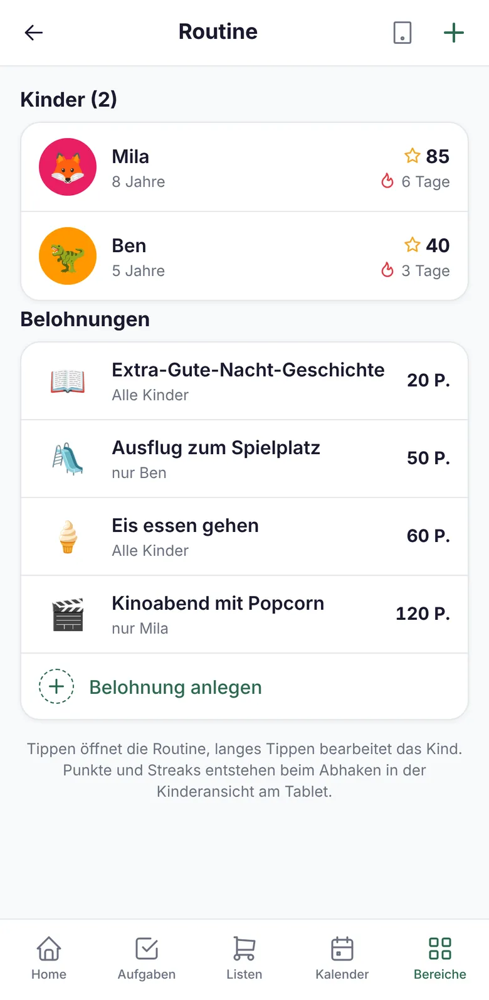
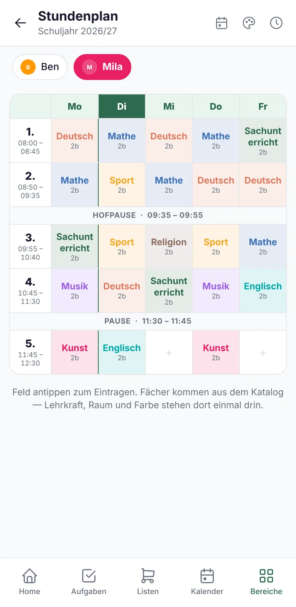

Weniger antreiben. Mehr selbst machen lassen.
Mit Kindern wächst die Liste der Dinge, an die jemand denken muss: Sportsachen, Elternbriefe, U-Termine, Abholzeiten. Nestio behält sie im Blick und gibt den Kindern Werkzeuge, um selbst Verantwortung zu übernehmen.
- Zähne putzen! Schuhe an! Wir müssen los!
- Hat Mila heute Sport?
- Wann ist nochmal die U8?
- Es regnet. Was machen wir heute?
Steht in Nestio. Für alle im Haushalt.
Zähne putzen! Schuhe an! Wir müssen los!
Morgens und abends: Die Kinder haken selbst ab.
Morgen- und Abendroutine für jedes Kind, mit Punkten, Belohnungen und Timern. Abgehakt wird am Familien-Tablet, ganz ohne eigenes Konto. Aus Antreiben wird Mitmachen.
- Punkte und BelohnungenJede erledigte Aufgabe bringt Punkte, die Kinder gegen vereinbarte Belohnungen eintauschen.
- Dranbleiben lohnt sichTage am Stück werden gezählt. Nach sieben Tagen gibt es eine Trophäe.
- Zeit sichtbar machenEin Countdown bis zur Abfahrt zeigt den Kindern, wie viel Zeit noch bleibt.
- Für jedes Kind passendEigenes Bild, eigene Farbe und Themen wie Dschungel, Weltall oder Piraten.

Der Morgen läuft ruhiger, wenn nicht alles über die Eltern laufen muss.
Hat sie heute Sport?
Der Stundenplan, der fürs Packen mitdenkt.
Der Stundenplan jedes Schulkinds in Nestio. Größere Kinder schauen selbst nach, Eltern von Erstklässlern haben Sportsachen und Bücher im Blick.
- Mitbringen pro FachTurnbeutel, Flöte, Werkzeug: Was zu einem Fach gehört, steht morgens auf der Mitnehmen-Liste.
- Einmal anlegenFächer mit Lehrkraft, Raum und Farbe stehen im Katalog und müssen nicht für jede Stunde neu geschrieben werden.
- A/B-Wochen und HortWechselnde Wochen und die Abholzeit nach Kernzeit oder Hort.
- Auf dem StartbildschirmDas Widget zeigt, welche Stunde gerade läuft und was danach kommt.

Keine Rückfrage mehr am Schultor, ob heute Sport war.
Es regnet. Was machen wir heute?
Ideen sammeln, bevor man sie braucht.
Eine gemeinsame Liste mit Ausflugszielen für Wochenenden, Ferien und Regentage. Sie steht als eigener Bereich in den Listen und wächst mit jedem Tipp von Freunden.
- Mit Ort, Link und NotizÖffnungszeiten, Preise oder „nur bei gutem Wetter“ gleich dazu.
- Nach Art sortiertNatur, Museum, Spielplatz, Schwimmbad: Für jedes Wetter das Passende.
- Schon besuchtAbhaken, was ihr erlebt habt. So bleibt die Liste frisch.
Am Samstagmorgen hat jemand eine Antwort auf „Was machen wir heute?“.
Wann ist nochmal die U8? Wo ist das U-Heft?
U-Untersuchungen immer im Blick.
Nestio kennt die Zeitfenster der U-Untersuchungen von der U2 bis zur J2 und rechnet sie aus dem Geburtsdatum aus. Zwei Wochen vorher kommt die Erinnerung, damit ein Termin noch rechtzeitig frei ist.
- Ohne das U-Heft zu suchenWelche Untersuchung als Nächstes ansteht, steht im Profil des Kindes.
- Rechtzeitig erinnertEine Nachricht zwei Wochen vor dem Zeitfenster.
- Auch für ErwachseneEigene Vorsorgen wie Zahnarzt oder Impfungen mit Fälligkeit.
Gesundheitstermine hängen nicht mehr am Gedächtnis einer Person.